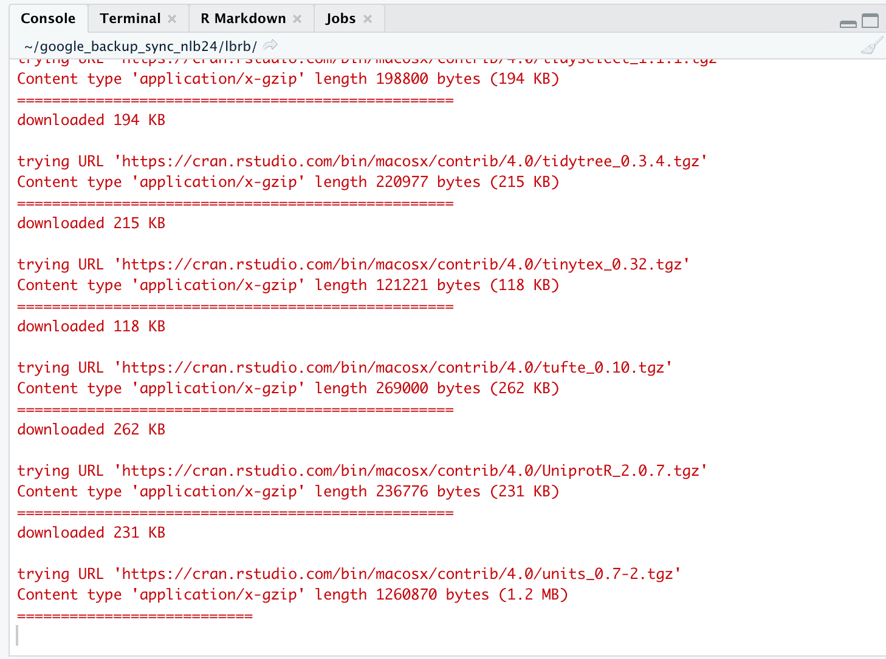

Chapter 4 Installing Bioconductor
By: Avril Coghlan.
Adapted, edited and expanded: Nathan Brouwer under the Creative Commons 3.0 Attribution License (CC BY 3.0), including details on install Bioconductor and common prompts and error messages that appear during installation.
4.1 Bioconductor
R packages (aka “libraries”) can live in many places. Most are accessed via CRAN, the Comprehensive R Archive Network. The bioinformatics and computational biology community also has its own package hosting system called Bioconductor. R has played an important part in the development and application of bioinformatics techniques in the 21th century. Bioconductor 1.0 was released in 2002 with 15 packages. As of winter 2021, there are almost 2000 packages in the current release!
NOTE: If you are working in an RStudio Cloud environment organized by someone else (eg a course instructor), they likely are taking care of most of package management issues, inlcuding setting up Bioconductor. The following information is still useful to be familiar with.
To interface with Bioconductor you need the BiocManager package. The Bioconductor people have put BiocManager on CRAN to allow you to set up interactions with Bioconductor. See the BiocManager documentation for more information (https://cran.r-project.org/web/packages/BiocManager/vignettes/BiocManager.html).
Note that if you have an old version of R you will need to update it to interact with Bioconductor.
4.2 Installing BiocManager
BiocManager can be installed using the install.packages() packages command.
install.packages("BiocManager") # Remember the " "; don't worry about the red textOnce downloaded, BioManager needs to be explicitly loaded into your active R session using library()
library(BiocManager) # no quotes; again, ignore the red textIndividual Bioconductor packages can then be downloaded using the install() command. An essential packages is Biostrings. To do this ,
BiocManager::install("Biostrings")4.3 The ins and outs of package installation
IMPORANT Bioconductor has many dependencies - other packages which is relies on. When you install Bioconductor packages you may need to update these packages. If something seems to not be working during this process, restart R and begin the Bioconductor installation process until things seem to work.
Below I discuss the series of prompts I had to deal with while re-installing Biostrings while editing this chapter.
4.3.1 Updating other packages when downloading a package
When I re-installed Biostrings while writing this I was given a HUGE blog of red test that contained something like what’s shown below (this only aout 1/3 of the actual output!):
'getOption("repos")' replaces Bioconductor standard repositories,
see '?repositories' for details
replacement repositories:
CRAN: https://cran.rstudio.com/
Bioconductor version 3.11 (BiocManager 1.30.16), R 4.0.5 (2021-03-31)
Old packages: 'ade4', 'ape', 'aster', 'bayestestR',
'bio3d', 'bitops', 'blogdown',
'bookdown', 'brio', 'broom', 'broom.mixed',
'broomExtra', 'bslib', 'cachem', 'callr',
'car', 'circlize', 'class', 'cli', 'cluster',
'colorspace', 'corrplot', 'cpp11', 'curl',
'devtools', 'DHARMa', 'doBy', 'dplyr', 'DT',
'e1071', 'ellipsis', 'emmeans', 'emojifont',
'extRemes', 'fansi', 'flextable', 'forecast',
'formatR', 'gap', 'gargle', 'gert', 'GGally'Hidden at the bottom was a prompt:
"Update all/some/none? [a/s/n]:"
Its a little vague, but what it wants me to do is type in a, s or n and press enter to tell it what to do. I almost always chose a, though this may take a while to update everything.
4.3.2 Packages “from source”
You are likely to get lots of random-looking feedback from R when doing Bioconductor-related installations. Look carefully for any prompts as the very last line. While updating Biostrings I was told: “There are binary versions available but the source versions are later:” and given a table of packages. I was then asked “Do you want to install from sources the packages which need compilation? (Yes/no/cancel)”
I almost always chose “no”.
4.3.3 More on angry red text
After the prompt about packages from source, R proceeded to download a lot of updates to packages, which took a few minutes. Lots of red text scrolled by, but this is normal.

4.4 Actually loading a package
Again, to actually load the Biostrings package into your active R sessions requires the libary() command:
library(Biostrings)As you might expect, there’s more red text scrolling up my screen!

I can tell that is actually worked because at the end of all the red stuff is the R prompt of “>” and my cursor.